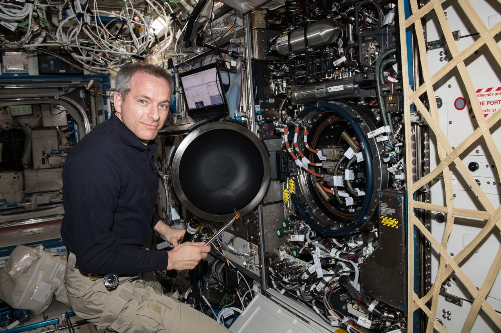

Explore

Investigations
All 24 NASA PSI investigations, with photos and data at a glance.
Open →
Simulation
Estimate whether a solid fuel keeps burning at Moon, Mars or Earth gravity. An estimate, not a prediction.
Open →Ignis AI
AI-assisted scoring of the investigations against your question.
Open →Photos are from the NASA Image and Video Library. They show hardware and sessions, not results.
- Ightflay ataday
- Oundgray udiesstay
- Irclecay, iangletray, uaresqay: evention-pray, etection-day, uppression-say
Our edge
- Irstfay ointpay
- Orem-lay ipsumyay olorday itsay ametyay, onsectetuercay adipiscingyay elityay.
- Econdsay ointpay
- Ethay uickqay ownbray oxfay umpsjay overyay ethay azylay ogday.
- Irdthay ointpay
- Isthay isyay aceholderplay exttay orfay ayoutlay onlyyay.